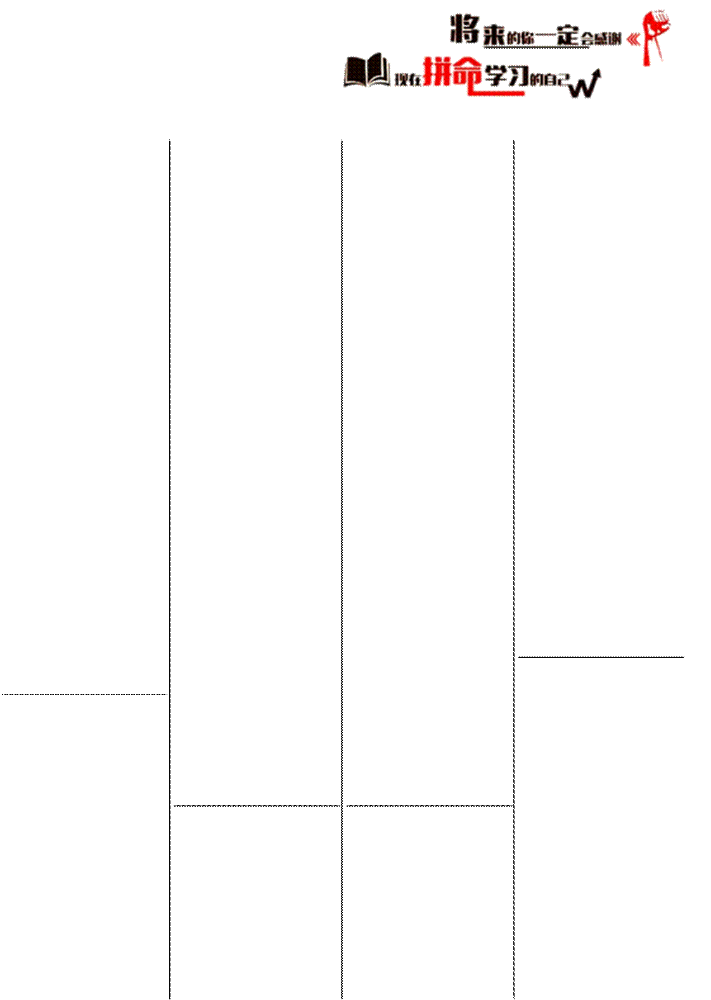

【文学迷雾中的求真者】暮秋的斜晖为教室镀上了一层鎏金1，一场关于《骆驼祥子》的“智识角力”2在月考第九题的命题罅隙3中悄然发酵。
硝烟弥漫的课间战场课桌如棋盘纵横，少年们以典籍为盾、逻辑为矛，在语义的迷宫中展开思想的炼金术。她的指尖叩击着泛黄书页，声线如绷紧的琴弦：“‘好逸恶劳’——这四字谶语4，岂能囊括虎妞以银元砸碎命运枷锁的孤勇？”5她
1 [鎏金（liújīn）]：形容词，本意指用金汞合金涂饰器物表面的工艺。文中形容暮秋阳光为教室镀上如鎏金般的光泽。
2 [智识角力（zhìshí juélì）]：名词性短语，本指智慧与知识的较量。文中指学生围绕文学
题的学术辩论。
3 [罅隙（xiàxì）]：名词，本义为缝隙、裂缝。文中喻指月考第九题命题存在的语义漏洞。
4 [谶语（chènyǔ）]：名词，本指预言吉凶的神秘话语。文中借指"好逸恶劳"四字对虎妞的武断评价。
5 [以银元砸碎命运枷锁的孤

的质问裹挟着纸页 讲台上的和 迁徙的角马群11在翻动的沙响，宛若
解时刻 知识荒原12上奔袭。一场微型的精神起 当语文谢教师 订正本如雪片纷飞，义。 凝视黑板上的思维 最顶端的作业本扉对峙者他推了
导图——虎妞的铜 页还沾着炸鸡的油推镜架，手机屏幕 钱耳环与小福子的 脂图腾——这是少的冷光映出他眼底
粗布衣襟被虚线勾 年们对体制化惩罚
的考据狂热：“小福 连，她以粉笔在黑 的狡黠献祭13。
子的肉身虽悬于林
板上写下博尔赫斯 “你们在演绎间枯枝，灵魂却从 的诗句：“镜子与交
西西弗斯神话的校未堕入风尘。后世 媾都是污秽的，因 园变体14吗？”吴鸣以道德判词涂抹她 其使人口增殖。”尘 凝视着作业山苦笑。
的终章，恰是文本 埃簌簌9落下，争议 走廊里，秒表定格阐释的暴力僭越6。”在隐喻中达成诗意 在
7.2 秒，数字的冰他的话语如手术刀 的和解。 冷理性与少年们滚般精准，剖开文学 【英语办公室 烫的求生欲形成荒解读的肌理。 的“闪电战”】 诞映照。
书架前的 周四午后 1:40 规训机制的
“考古现场” 分，一场关于规训 进化论
图书角的《骆 与反抗的微型社会 翌日，黑板角驼祥子》被肢解成散落的符号，荧光 实验正在上演。课间十分钟 落的白色粉笔字如摩西律法15：“订正
笔与便签构筑起临师倚门喟叹时学术壁垒：7“。王老这些 的生存博弈办公桌沦为符号战班主任吴鸣的 11非洲动物迁徙。文中喻指学生jiǎom[迁徙的角马群（ǎ qún）]：比喻结构qiānx，ǐ本指de 孩子，竟把考场争 场10。当他沉溺于隔
涌入办公室交作业的群体行为。
议升格为一场解构 壁班的语法迷宫时，12 [知识荒原（zhīshi huā
主义狂欢8。” ngyuán）]：比喻结构，本指文化贫瘠之地。文中反讽现代教育生态。
勇（gūyǒng）]：比喻结构，本 kuánghuān）]：名词性短语，本
13 [对体制化惩罚的狡黠献祭无固定含义。文中特指虎妞用 为哲学概念。文中喻指学生对 （xiànjì）]：比喻结构，本指宗私房钱为祥子买车的反抗行为。文本的颠覆性解读行为。 教仪式。文中指学生通过突击
6 [僭越（jiànyuè）]：动词，本 9 [簌簌（sùsù）]：拟声词，本 交作业规避惩罚的策略。
指超越本分。文中批评后世读 指细碎声响。文中描写粉笔灰 14 [西西弗斯神话的校园变体者对原著的主观解读
飘落的动态。 （biàntǐ）]：典故活用，本为希 7 [壁垒（bìlěi）]：名词，本指 10 [符号战场（fúhào 腊神话。文中喻指学生重复订防御工事。文中指学生用荧光 zhànchǎng）]：比喻结构，本无 正的荒诞处境。
笔与便签构建的学术研究标记。固定含义。文中指作业本堆积 15 [摩西律法（Móxī lǜfǎ）]：
8 [解构主义狂欢（jiěgòu zhǔyì 形成的意义空间。 宗教典故，本指《旧约》戒律。
须附
200 字元语言 师的听课笔记洇开 教务处调研数反思。”哀鸿遍野中，18墨迹：“错误是认 据的柱状图如巴别 在争议的刀锋林妍的轻笑如解构
知的胎记，他正以 塔矗立：37%的受 上起舞，方能冶炼主义的号角：“我们 谬误为梯，攀向真 试者在规训中觉醒 批判性思维的黄金在共谋中重塑游戏 理的窄门。” 语法自觉，45%的
规则。” 【课堂革命的 曲线在适应期震荡。 穿越规则的火
【公开课舞台上的追光者】
试金石】吴鸣的英语课
教师休息室的咖啡氤氲24着焦虑：“这 刑柱，方知自由的真义是责任的重轭
李军昊在《平 成为福柯式权力解
是教育的异化还是
面镜》公开课上的
剖的实验场。 启蒙？” 拥抱错误的暗表演，成为存在主 朗读仪式的【深度观察：解 物质，方能在认知义的最佳注脚。 复调叙事 构者与被解构
 的存在之思光学实验中 运之手指向，他的当第 8 次被命
者】
的混沌中孕育新星如同老舍笔下当他的手势如
翻译声颤抖着刺穿 知暴动，实为现代这场春日的认 骆驼队穿越北平的拜占庭圣像画中的祈祷者起，听课席的钢笔16般固执升
沉默of机提问如同达摩克existence...：“The ”weight随 性困境的微型剧场。当第九题的语 晨雾，这群解构时代的朝圣者，终将纷纷坠地。他指出 利斯之剑19，在概率 义裂隙成为思辨的 在知识考古的废墟入射角的数值偏差时，镜面反射的不仅是光线，更是教 云据显示，被抽查者的语言错误率下20中悬停。月考数降 虫洞，当订正本堆砌成规训的哭墙，初一们正以稚嫩笔触书（1）班的少年
上，用谬误的砖石筑起属于自己的理性圣殿。
的存在之思光学实验中 运之手指向，他的当第 8 次被命
者】
的混沌中孕育新星如同老舍笔下当他的手势如
翻译声颤抖着刺穿 知暴动，实为现代这场春日的认 骆驼队穿越北平的拜占庭圣像画中的祈祷者起，听课席的钢笔16般固执升
沉默of机提问如同达摩克existence...：“The ”weight随 性困境的微型剧场。当第九题的语 晨雾，这群解构时代的朝圣者，终将纷纷坠地。他指出 利斯之剑19，在概率 义裂隙成为思辨的 在知识考古的废墟入射角的数值偏差时，镜面反射的不仅是光线，更是教 云据显示，被抽查者的语言错误率下20中悬停。月考数降 虫洞，当订正本堆砌成规训的哭墙，初一们正以稚嫩笔触书（1）班的少年
上，用谬误的砖石筑起属于自己的理性圣殿。
育剧场中权力关系 18%——数字的暴 写自己的《存在与
温
的倒置。“每举一次 政21正在重塑认知 时间》。他们在虎妞
手，都是对过往逾 地貌22。 的银元与小福子的 馨 米
矩的救赎。”在理性 沉默的多数23 麻绳间勘测人性经25，在平面镜的虚
他以稚拙却坚定的 像中凝视自我异化，提与感性的天平上， 派報告 纬投下砝码。 渐扩散开来19 [达摩克利斯之剑，形成湿润的痕迹。里演绎存在主义的 示. . 饭姿态，为自我救赎 18 [洇开（yīnkāi）]：指液体逐 在英语动词的变位谬误的星尘 （Dámókèlìsī zhī jiàn）]：希腊 生存剧本。
双像论”被证伪，
指随机提问带来的压迫感。20 [概率云（gàilǜ yún）]：物理
或许恰是海德格尔
九尽管“平面镜
典故，本指悬顶之危。文中喻 教育的本质，
但板书时的粉笔灰17如 学术语，本指量子力学概念。文中借喻随机提问的不确定性。所言的预演：“向死而生” 点在斜阳中翩跹
量子尘埃。青年教 21 [数字的暴政（bàozhèng）]：
文中指教师颁布的新规。 中批评用统计数据简单衡量教
学生的集体态度。 出比喻结构，本无固定含义。文 《少数派报告》。文中指未发声
16 [拜占庭圣像画中的祈祷者 学效果。 24 [氤氲（yīnyūn）]：形容词，
（qídǎozhě）]：艺术史意象， 22 [重塑认知地貌（rènzhī 本指烟云弥漫。文中描写教师
本指宗教绘画形象。文中形容 dìmào）]：比喻结构，本指地 休息室的咖啡雾气与焦虑氛围。太
本指轻盈旋转的舞姿。文中描 23 [沉默的多數派報告（duō 文中喻指通过文学人物探究的 阳李军昊固执举手的神态。 理形态变化。文中指教学改革 25 [人性经纬（rénxìng jīngwěi）]：
17 [翩跹（piānxiān）]：动词， 对思维模式的影响。 比喻结构，本指织物纵横线。
写粉笔灰在光线中的飘动。 shù
pài bàogào）]：化用小说名 人性维度。